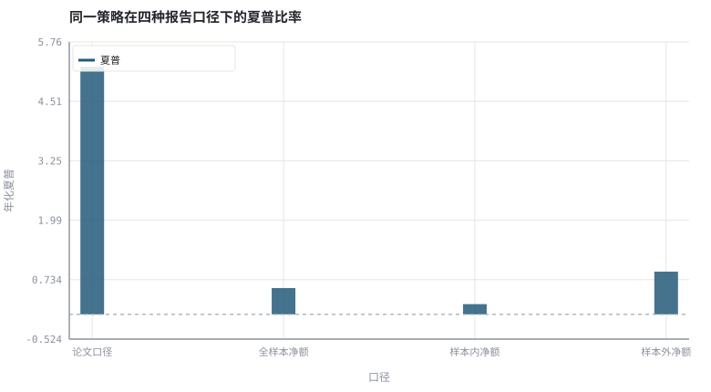
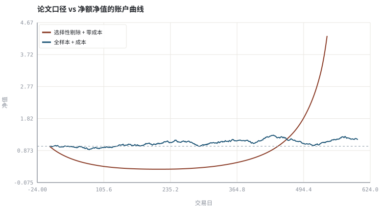

第 24 章怎样读一篇因子论文：从摘要到可复现
论文的结论是一个条件命题：先读条件，再读结论。
本章位置：第四阶段以「怎样判断一个主张是否可信」收尾；第 25 章 · 数据管道：对齐、公司行动与幸存者偏差 起进入第五阶段的第一部分：把评估协议落成可运行的数据与回测流水线。
读论文像做 code review：先看输入数据的 schema 与时间边界，再看有没有隐藏的全局常量，最后才看输出指标。缺少复现协议的漂亮结果，等于没有测试的 benchmark。
- 能列出论文复现所需的最小信息清单。
- 能识别样本选择、成本假设与样本外声明中的漏洞。
- 能量化「选择性剔除 + 零成本」对夏普的抬升。
- 能把论文的结论写成可检验的 H0 与评估协议。
§知识点地图
每个知识点都配了 1～2 个扩展学习链接；本章完整资源清单见 扩展学习。
| # | 知识点 | 扩展学习 | 状态 |
|---|---|---|---|
| 1 | 样本期与样本外 | Walk forward optimization · Overfitting | 正文已覆盖 |
| 2 | 组合构建口径 | Modern portfolio theory · Efficient frontier | 正文已覆盖 |
| 3 | 成本与容量假设 | SSRN · arXiv q-fin | 正文已覆盖 |
| 4 | 数据来源与 point-in-time | SSRN · arXiv q-fin | 正文已覆盖 |
| 5 | t 值与多重检验 | p-hacking · Data dredging | 正文已覆盖 |
| 6 | 选择性剔除与幸存者 | Survivorship bias · Backtesting | 正文已覆盖 |
| 7 | 夏普比率的敏感性 | Sharpe ratio · Sortino ratio | 正文已覆盖 |
| 8 | 复现协议 | SSRN · arXiv q-fin | 正文已覆盖 |
§24.1一份最小复现清单
| 项目 | 必须问清 | 缺失时的后果 |
|---|---|---|
| 样本 | 起止时间、市场、剔除规则 | 无法判断是否做过样本选择 |
| 数据 | 价格复权、退市/停牌处理、可用时刻 | 幸存者偏差与前视偏差 |
| 组合 | 权重、调仓频率、多空约束 | 权重口径不同可得相反结论 |
| 成本 | 佣金、价差、冲击、借券费 | 毛夏普无法转成净收益 |
| 推断 | t 值、Newey-West、检验次数 | 多重检验下的假发现 |
| 样本外 | 参数何时固定、是否真未使用 | 样本内过拟合 |
读论文时把这张表当成接口契约：任何一格缺失，结论就只能算「有意思的观察」，还不能算可执行的证据。
§24.2夏普比率对成本与样本选择极敏感
Sharpe_net ≈ (μ_gross − cost) / σ × √252
日频策略里，0.03% 的双边成本就能吃掉相当一部分日均值；而「剔除最差的 10% 交易日」这种看似无害的清洗，等价于用了未来信息做样本选择。两者叠加足以把一个无 alpha 的策略包装成高夏普。
§24.3把结论改写成协议
- H0：该因子在扣除成本后的样本外平均收益为 0。
- 冻结：在开始评估前写死参数、样本切分与成本假设。
- 评估：报告净夏普、t 值、最大回撤、换手与容量。
- 复现：换数据源、换市场、换时间窗，看符号是否稳定。
§Python 分析实例
实验 24-1 · 同一策略的四种报告口径
#!/usr/bin/env python3
# -*- coding: utf-8 -*-
"""量化「选择性剔除 + 零成本 + 样本内」对夏普的抬升，并与净额/样本外对照。
数据为合成数据或模型示意，仅用于教学，不构成投资建议。
"""
from __future__ import annotations
import math
import pathlib
import random
import statistics
import sys
sys.path.insert(0, str(pathlib.Path(__file__).resolve().parents[3] / "tools"))
from chart import Chart, candlestick, heatmap, BLUE, RED, GREEN, AMBER
FIG = pathlib.Path(__file__).resolve().parents[1] / "fig"
FIG.mkdir(exist_ok=True)
random.seed(7)
# ---- 参数区 ----
N, SPLIT = 600, 300
MU, SIG = 0.0004, 0.010 # 合成策略的日均毛收益与波动
COST = 0.0003 # 每日双边成本
TRIM = 0.10 # 论文口径「剔除最差 10% 交易日」
ANN = 252
# ---- 计算与作图 ----
rng = random.Random(7)
raw = [rng.gauss(MU, SIG) for _ in range(N)]
def sharpe(series):
s = statistics.pstdev(series)
return statistics.fmean(series) / s * math.sqrt(ANN) if s else 0.0
def equity(series):
v, out = 1.0, [1.0]
for r in series:
v *= (1 + r)
out.append(v)
return out
paper = sorted(raw)[int(N * TRIM):] # 非法：用全样本挑掉最差的日子
net = [r - COST for r in raw]
oos = [r - COST for r in raw[SPLIT:]]
is_net = [r - COST for r in raw[:SPLIT]]
s_paper, s_net, s_is, s_oos = sharpe(paper), sharpe(net), sharpe(is_net), sharpe(oos)
labels = ["论文口径", "全样本净额", "样本内净额", "样本外净额"]
vals = [s_paper, s_net, s_is, s_oos]
c = Chart(FIG / "24-sharpe.svg", "同一策略在四种报告口径下的夏普比率", xlabel="口径", ylabel="年化夏普",
xticks=[(i, n) for i, n in enumerate(labels)])
c.bars(range(4), vals, BLUE, label="夏普")
c.hline(0.0, "#9aa6b2")
print("夏普图:", c.save())
e = Chart(FIG / "24-equity.svg", "论文口径 vs 净额净值的账户曲线", xlabel="交易日", ylabel="净值")
e.line(range(len(paper) + 1), equity(paper), RED, label="选择性剔除 + 零成本")
e.line(range(N + 1), equity(net), BLUE, label="全样本 + 成本")
e.hline(1.0, "#9aa6b2")
print("净值图:", e.save())
print("论文口径=%.3f 全样本净额=%.3f 样本内=%.3f 样本外=%.3f | 成本使夏普下降 %.3f" %
(s_paper, s_net, s_is, s_oos, s_paper - s_net))操作：把 TRIM 设为 0（不剔样本）、COST 设为 0，观察四种口径是否收敛。 预期与判读：「剔掉最差 10% 交易日」与「不计成本」各自都能显著抬高夏普，且都不需要任何真实预测能力。样本外净额通常最低。报告口径本身就是结论的一部分。
改参数看趋势：把 MU 设为 0（无真实 alpha），论文口径仍可能显示正夏普——这是纯样本选择的结果。 文件位置：part4/24-read-papers/code/24-replication.py


代码块右上角可一键复制；仓库里的 code/*.py 由 tools/extract_code.py 从这些代码块自动抽取。脚本只用标准库、固定 random.seed(7)，运行后写出 fig/*.svg；批量运行用 ./tools/run_python.sh。
§本章参考资料
按本章知识点挑选的精读资料；更多检索入口见 扩展学习。
SPIVA 主动/被动业绩对比
机构 · 参考资料主动基金相对基准的长期胜率统计
怎么用：主动/被动长期业绩的公开统计https://www.spglobal.com/spdji/en/research-insights/spiva/
§常见误区
- 只看摘要里的夏普与 t 值，不读样本与成本附录。
- 把作者自己报告的「样本外」当成真正的样本外。
- 忽略因子数量与检验次数。
- 用自己的数据口径复现失败后直接归咎于市场变化。
§习题与思考
- 给一篇真实论文填本章的最小复现清单，指出至少两处缺失信息。
- 在示例里加入 Newey-West 调整的思路，说明自相关怎样影响 t 值。
- 写出一份「评估前冻结」的 JSON 配置，列出所有参数与数据版本。
§扩展学习
以下资料按本章知识点挑选，可直接精读或对照真实数据；知识点地图里每一条也挂了 1～2 个直达链接。
- SSRN（机构）：金融学预印本与因子研究检索
SSRN - arXiv q-fin（数据）：量化金融与因子研究预印本
arXiv q-fin - p-hacking（百科）：多重检验下的假阳性膨胀
p-hacking - SPIVA 主动/被动业绩对比（机构）：主动基金相对基准的长期胜率统计
SPIVA 主动/被动业绩对比 - NBER（机构）：资产定价与实证金融工作论文
NBER
继续扩展：在 Google Scholar 检索本章相关论文 · 在 MIT OCW 检索配套课程 · 在 arXiv 检索预印本 · 全书参考资源总表 · 附录 A 速查与链接总表
§延伸阅读与内链
- 第 25 章 · 数据管道：对齐、公司行动与幸存者偏差 point-in-time 数据；第 28 章 · 过拟合、多重检验与滚动样本外 多重检验与滚动样本外；第 31 章 · 投资政策说明书与长期复盘 复盘协议。